Natural-fibre clothing, kept in every size
100 styles in wool, cotton, linen and cashmere, each one kept in stock in every size and colour, all year.
Clothing ranges from £85
Three of the six ranges. Jersey, trousers and tailoring make up the rest of the 100 styles.
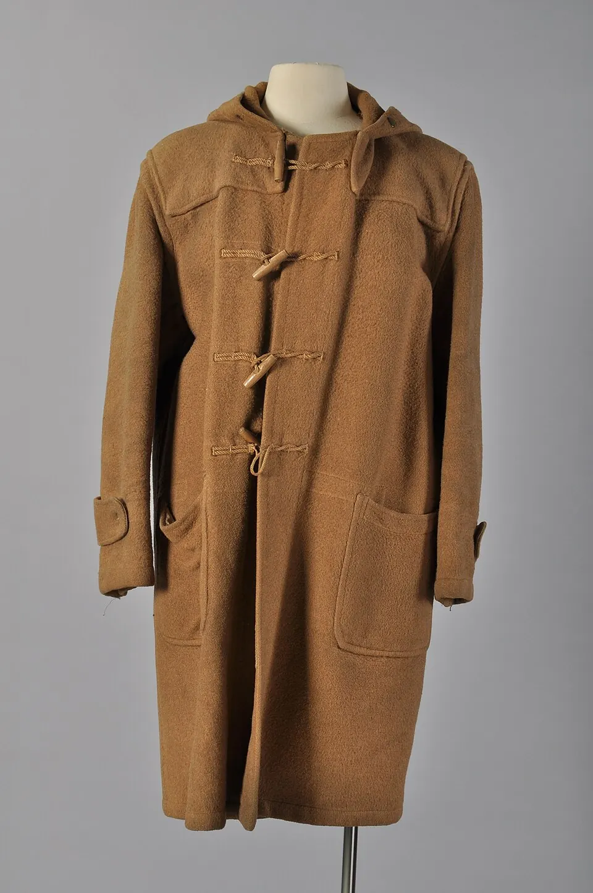
Outerwear, 14 styles
from £250Wool, wax and gabardine
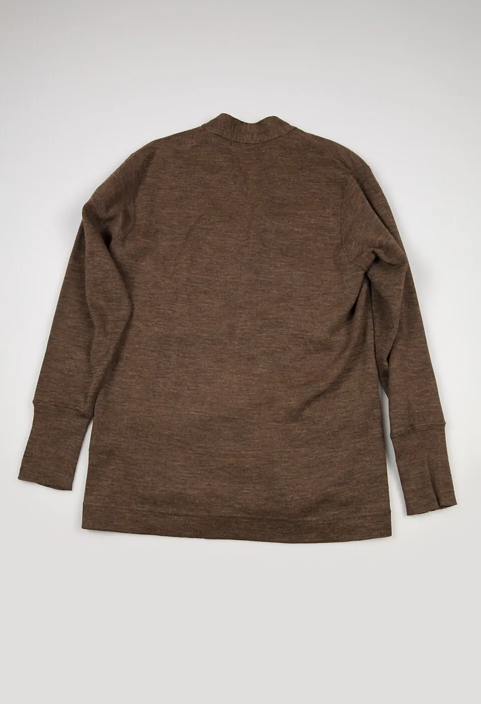
Knitwear, 18 styles
from £120Merino, lambswool and cashmere
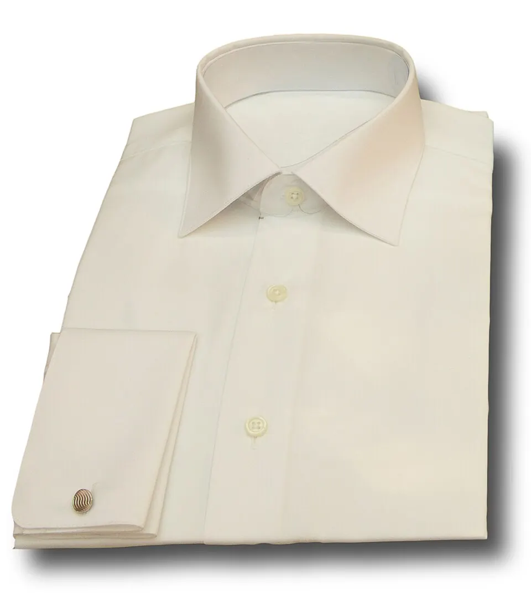
Shirts, 18 styles
from £85Oxford, poplin, flannel and linen
The permanent collection
We make one collection and keep it. A style stays in the range, in every size and colour, until we can make it better, and when it wears through we mend it.
Natural-fibre cloths, close up
Donegal tweed for the Tweed Sport Coat (£255), cotton chambray for the Chambray Shirt (£125), Japanese selvedge denim for the Rigid Selvedge Jean (£135) and Geelong lambswool for the Fisherman Jumper (£235).
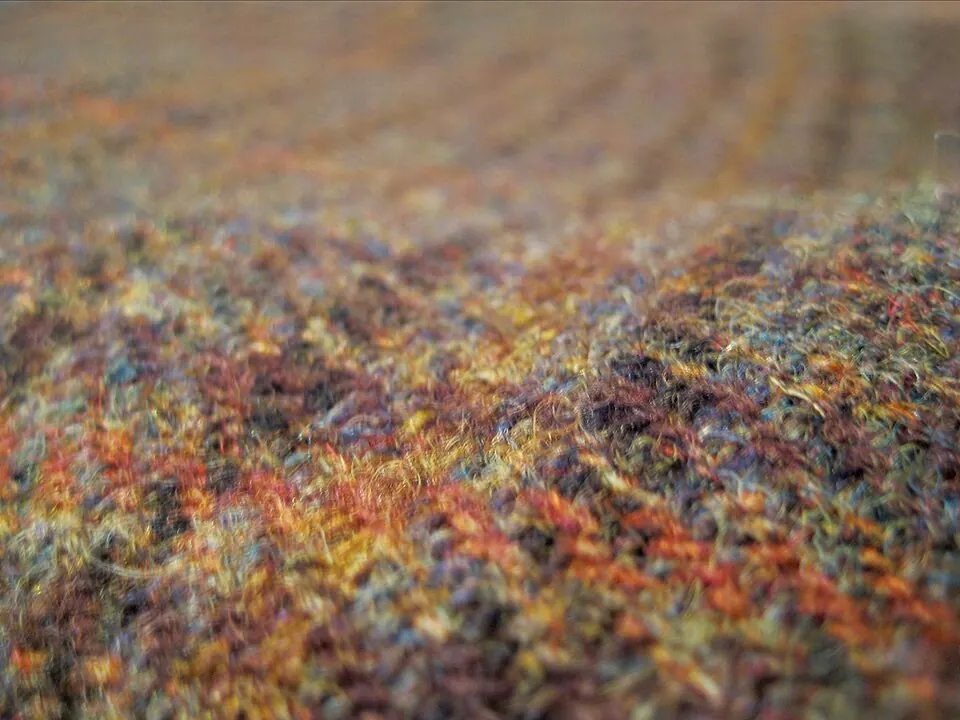
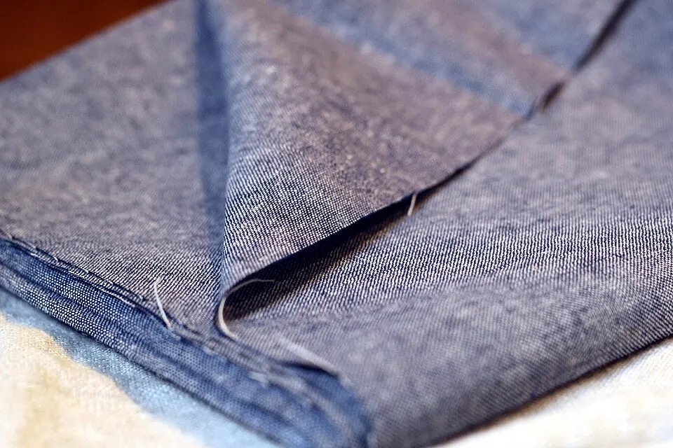
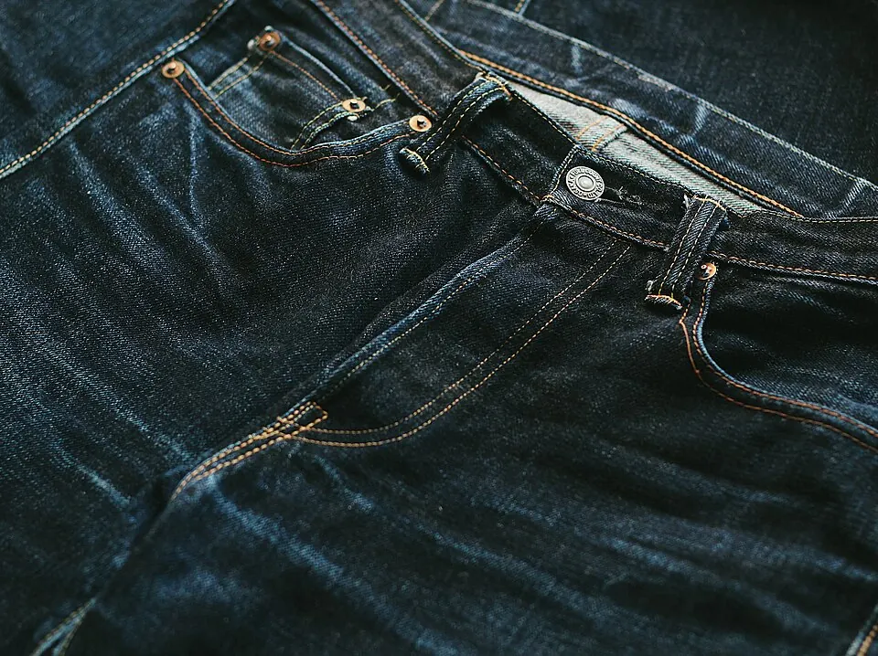
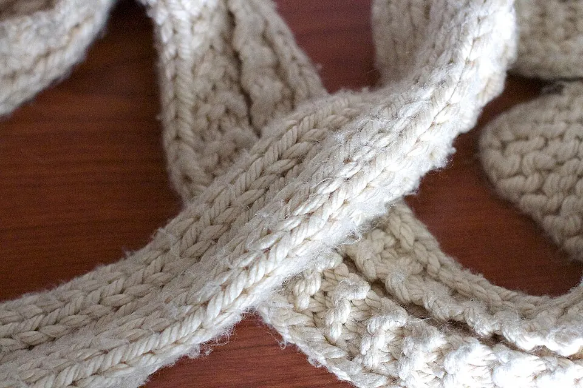
Repairs for as long as you wear it
Any Archive 88 piece can come back to us for mending, from a hole in a sleeve to a split seam.
-
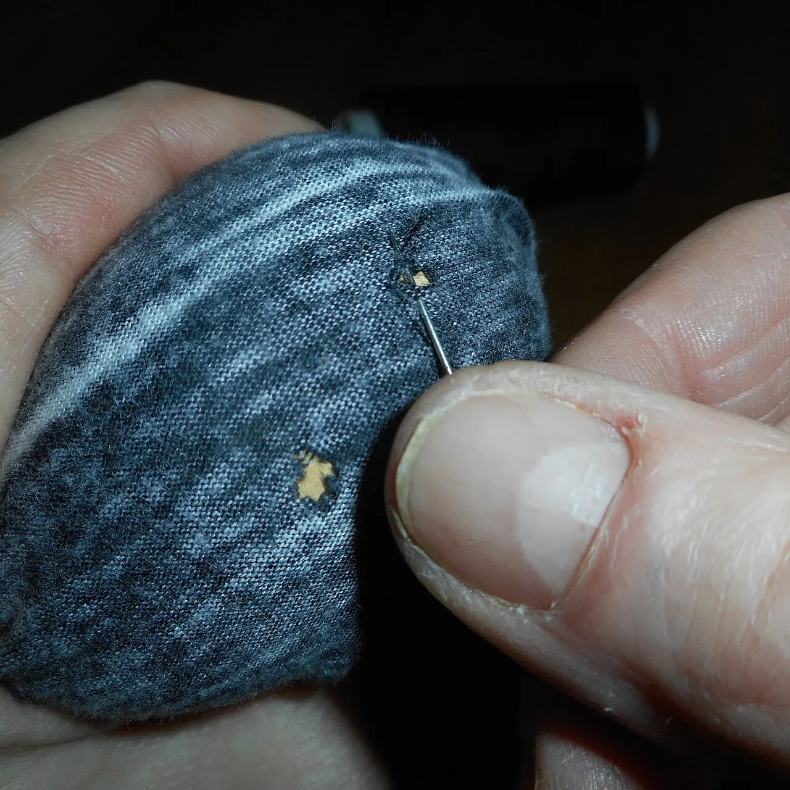
Holes darned by hand
Holes in knitwear are darned with a needle and a yarn close to the original colour.
-
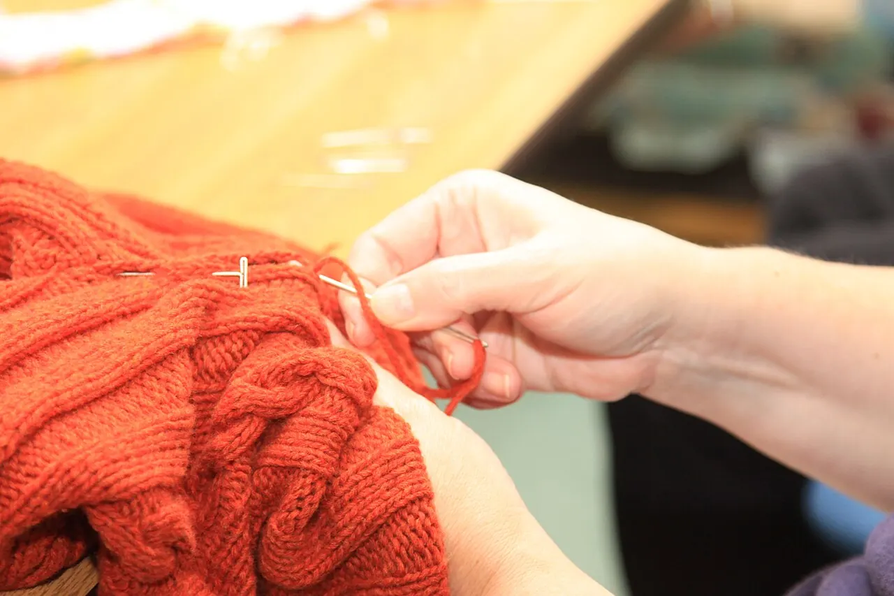
Cuffs and hems knitted again
Worn cuffs and hems are picked up and knitted back, stitch by stitch.
-
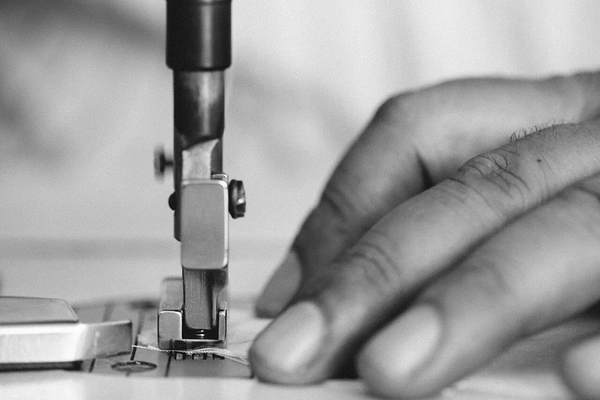
Seams and linings sewn
Split seams, torn linings and loose buttons are fixed on the machine.
Delivery, returns and sizes
- UK deliveryFree on orders over £150
- ReturnsFree within 30 days, collected
- SizesXS to XXL
- Made inUK, Portugal, Italy, Japan
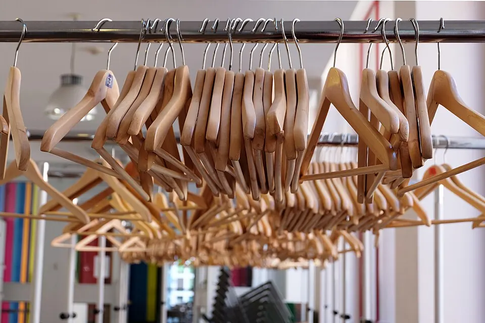